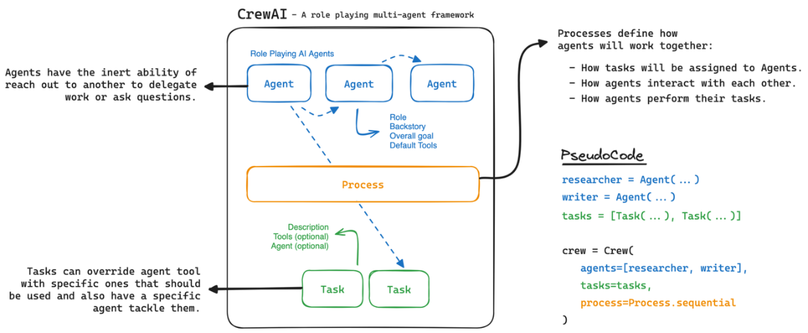
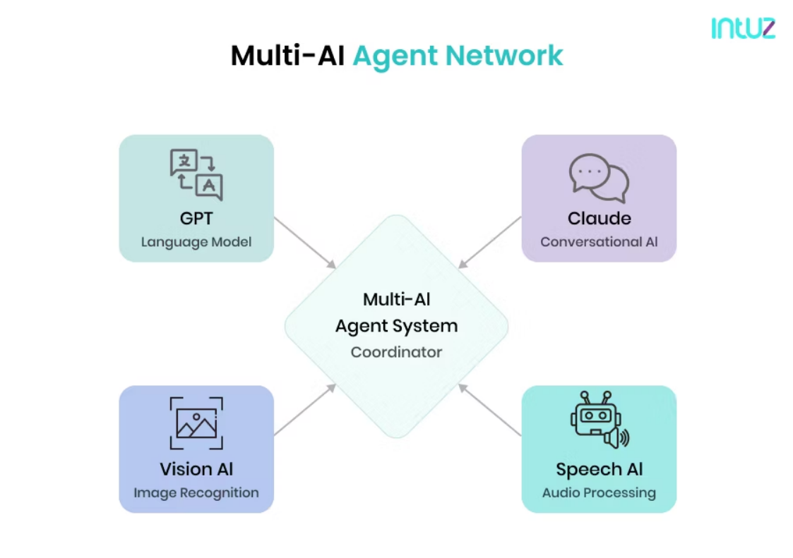

CrewAI
随着 Agent 技术不断发展，人们逐渐发现，单个 Agent 在处理复杂任务时往往存在能力边界。现实世 界中的很多问题，例如商业分析、软件开发、科研写作或产品设计，都需要多种角色共同协作才能完 成。如果让一个 Agent 同时承担所有任务，不仅会导致推理复杂度增加，也容易出现效率低下或逻辑 混乱的问题。 因此，在 Agent 系统设计中逐渐出现了一种新的思路：通过多个 Agent 分工协作来完成复杂任务。这 一类系统通常被称为 Multi-Agent System（多智能体系统）。

在这种背景下，CrewAI 框架逐渐受到开发者关注。CrewAI 的核心理念非常直观：将一个复杂任务交 给一组不同角色的 Agent，通过协作完成整体目标。这种方式类似于现实世界中的团队工作模式，每 个成员都有自己的职责，而整体任务则由团队共同完成。
Multi-Agent 协作
CrewAI 最核心的能力是 Multi-Agent 协作机制。在系统中，可以创建多个不同的 Agent，每个 Agent 负责不同的任务领域，并且拥有独立的 Prompt、能力以及工具。

例如，在一个内容生产系统中，可以设计如下几个 Agent： 研究员 Agent
负责收集资料、搜索信息并整理研究材料。 写作 Agent
根据研究内容生成文章结构与文本。 编辑 Agent
对生成内容进行润色、修改与结构优化。
审校 Agent 检查逻辑错误、语法问题以及事实准确性。
在 CrewAI 系统中，这些 Agent 会按照一定流程协作，例如： 研究员 Agent 收集信息
↓
写作 Agent 生成文章
↓
编辑 Agent 优化内容
↓
审校 Agent 进行最终检查
这种协作模式可以显著提高任务完成质量，因为每个 Agent 都专注于 自己擅长的领域。 此外，多 Agent 系统还可以实现更加复杂的协作机制，例如：
任务分配
并行执行
结果整合
多轮协商
例如，在一个商业分析任务中，不同 Agent 甚至可以对同一问题给出不同观点，然后由决策 Agent 综 合分析结果。 这种机制使 AI 系统逐渐接近 团队协作模式。
Role-based Agent
CrewAI 的另一个重要设计是 Role-based Agent（角色化智能体）。
在 CrewAI 中，每个 Agent 都被赋予一个明确的角色，这个角色通常包含以下信息：
-
角色名称
-
角色目标
-
角色能力
-
角色工具
例如： 角色名称
Market Analyst 角色目标
分析市场趋势并提出商业建议。 角色能力 数据分析、趋势判断、商业建模。 角色工具
搜索工具、数据分析工具。
通过这种方式，每个 Agent 在执行任务时都会 按照角色设定进行推理。这使得 Agent 的行为更加稳 定，并且能够形成清晰的职责分工。
Role-based Agent 的优势主要体现在三个方面。 首先，系统结构更加清晰。开发者可以像设计组织结构一样设计 Agent 团队。
其次，任务执行更加稳定。由于每个 Agent 只负责一部分任务，因此推理复杂度会明显降低。 第三，系统扩展更加容易。如果需要增加新能力，只需要增加新的 Agent 角色即可。 例如，在一个软件开发 Agent 系统中，可以设计：
-
产品经理 Agent
-
架构师 Agent
-
程序员 Agent
-
测试工程师 Agent
这样一个 AI 团队就可以协作完成完整的软件开发流程。
CrewAI 的工程意义
CrewAI 的出现，使 Agent 系统开始从 单 Agent 模式向 团队协作模式演进。这种模式非常适合处理复 杂任务，例如：
自动研究系统
企业数据分析系统
AI 内容生产系统
自动软件开发系统
在这些场景中，任务往往需要 多阶段处理和多角色协作，而 CrewAI 提供了一种相对简单且清晰的实 现方式。
与传统 Agent 框架相比，CrewAI 更强调 任务分工与协作机制。这种设计思想与现实世界中的团队协作 非常接近，因此在很多复杂应用中具有较高的实用价值。 总体来看，CrewAI 代表了 Agent 架构中的 Multi-Agent 协作方向。通过将复杂任务拆分给多个角色 化 Agent，系统可以更高效地完成复杂目标。